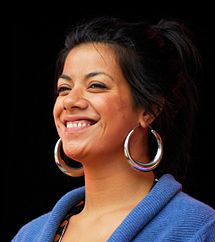

Ladi6
Ladi6 (born Karoline Tamati, 7 November 1982 in Christchurch, New Zealand) is a recording artist of Samoan descent. She spent six months living in Berlin and touring Europe in both 2010 and 2011. Her debut album Time Is Not Much debuted at number 4 on the New Zealand Top 40 Album chart. and her second album The Liberation Of... debuted at number 6 and was certified gold. Her single Like Water was certified platinum in June 2011. She has won many awards, including Best Female Solo Artist and Best Urban Hip Hop Album at the 2011 New Zealand Music Awards and Best Urban/Hip Hop Album at the 2009 New Zealand Music Awards. The current line-up of the wider Ladi6 group is Ladi6, her partner Parks (a.k.a. Brent Park) and Julien Dyne. Ladi6 has been called "New Zealand's answer to Erykah Badu".
Ladi6 is a spokesperson for the Not Our Future anti-smoking campaign
Discography
Albums
| Year |
Title |
Details |
Peak Chart positions |
| 2008 |
Time Is Not Much |
- Released: 27 October 2008
- Formats: CD, digital download
- Label: Question Music
|
4 |
| 2010 |
The Liberations Of... |
- Released: 1 October 2010
- Formats: LP, CD, digital download
- Label: Question Music
|
6 |
| 2013 |
Automatic |
- Released: 16 August 2013
- Formats: LP, CD, digital download
- Label: Question Music
|
3 |
Singles
| Year |
Single |
Peak chart positions |
Album |
| 2001 |
"If I Gave u th' Mic" (with Sheelahroc) |
- |
Non-album Single |
| 2002 |
"If I Gave u th' Mic" (Phat Beats Down mix) (with Sheelahroc) |
- |
| 2003 |
"Gold" (with Verse Two) |
- |
| "Danger" (with Verse Two) |
- |
| 2008 |
"Go Get It" (with Sepalot) |
- |
| "Walk Right Up" |
- |
Time Is Not Much |
| 2010 |
"Walk Right Up (Parks Remix)" |
- |
| "Sweet Love" (with Opensouls) |
- |
Non-album Single |
| "Bang Bang" |
- |
The Liberation Of... |
| 2011 |
"Like Water (song)" |
9 |
| 2012 |
"Confusion Of A Lady" (with Eva Be) |
- |
Non-album Single |